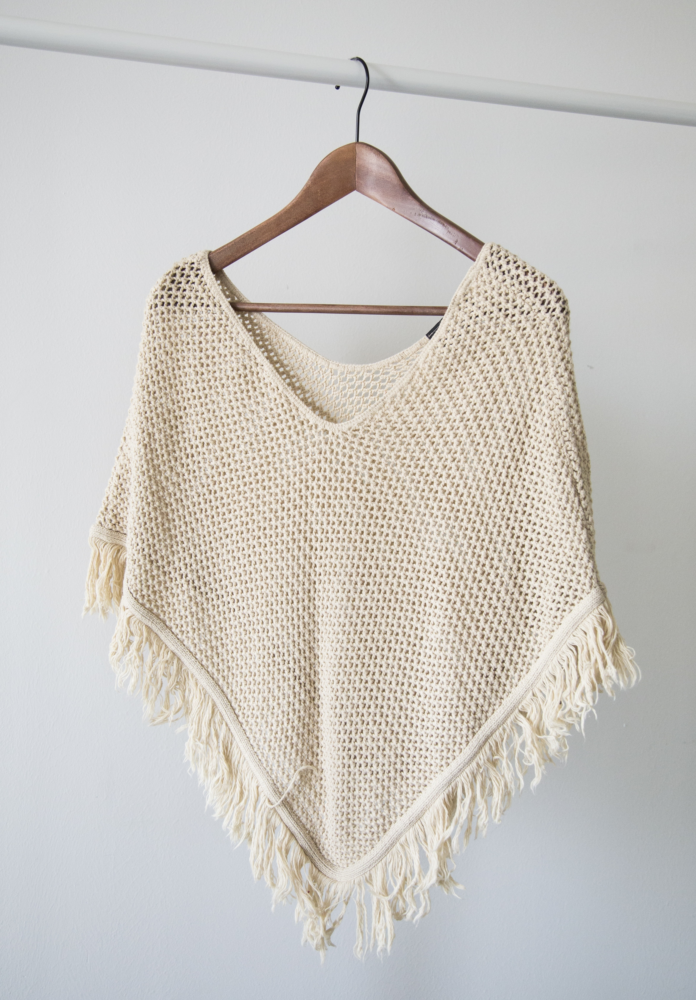

Catálogo
Artículos
Seleccioná una categoría para recorrer las piezas disponibles. Cada artículo incluye una ficha PDF con información adicional.
Catálogo
Seleccioná una categoría para recorrer las piezas disponibles. Cada artículo incluye una ficha PDF con información adicional.